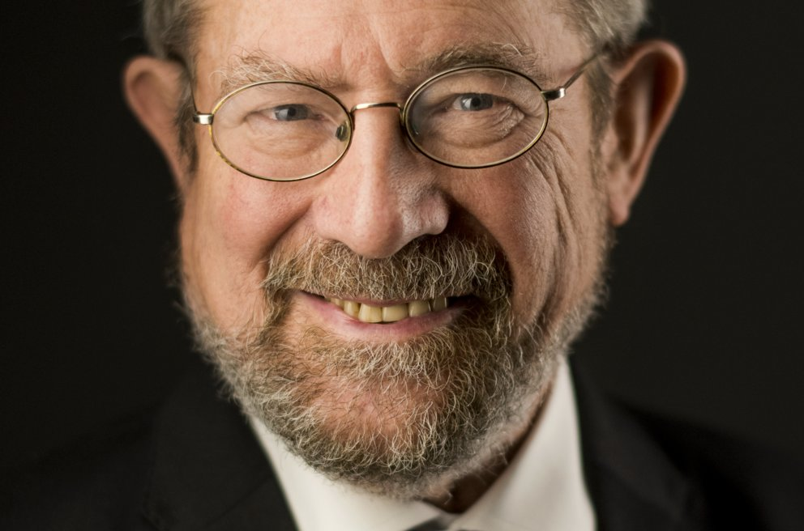
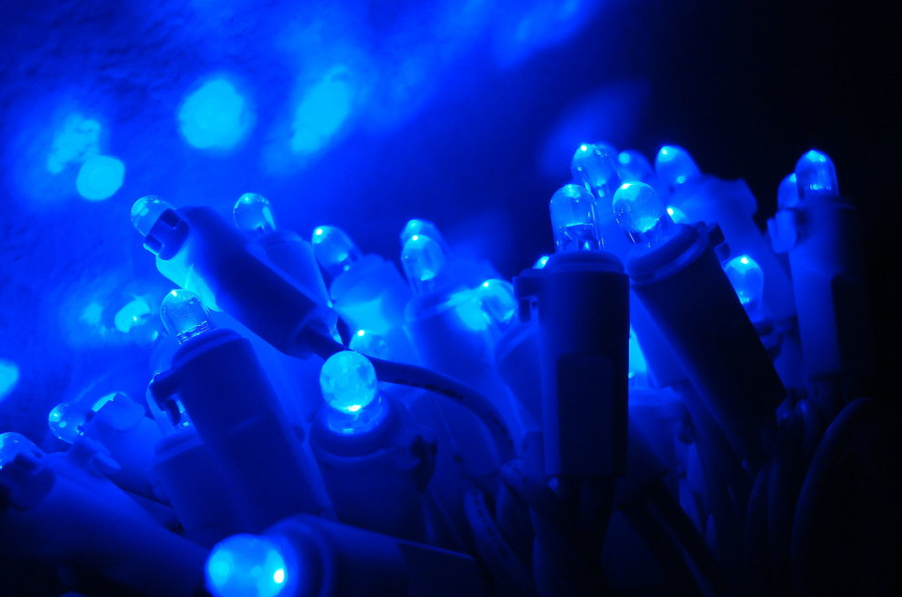
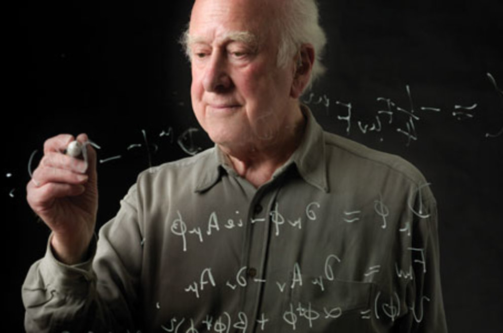

Sign up to the "Monthly" newsletter
Join thousands of global subscribers enjoying the free monthly Nobel Prize highlights, trivia and up-to-date information.
“The said interest shall be divided into five equal parts, which shall be apportioned as follows: /- – -/ one part to the person who shall have made the most important discovery or invention within the field of physics …”(Excerpt from the will of Alfred Nobel)
Physics was the prize area which Alfred Nobel mentioned first in his will from 1895. At the end of the nineteenth century, many people considered physics as the foremost of the sciences, and perhaps Nobel saw it this way as well. His own research was also closely tied to physics.
The Nobel Prize in Physics is awarded by the Royal Swedish Academy of Sciences, Stockholm, Sweden.
See all physics laureates or learn more about the nomination process.
Using groundbreaking experiments, Alain Aspect, John Clauser and Anton Zeilinger have demonstrated the potential to investigate and control particles that are in entangled states. What happens to one particle in an entangled pair determines what happens to the other, even if they are really too far apart to affect each other. The laureates’ development of experimental tools has laid the foundation for a new era of quantum technology.
Related articles
Press release: The Nobel Prize in Physics 2022The Nobel Prize in Physics 2022 was awarded to Alain Aspect, John F. Clauser and Anton Zeilinger “for experiments with entangled photons, establishing the violation of Bell inequalities and pioneering quantum information science”.
Their results have cleared the way for new technology based upon quantum information.
The Nobel Prize in Physics 1921
"for his services to Theoretical Physics, and especially for his discovery of the law of the photoelectric effect."
The Nobel Prize in Chemistry 1911
"in recognition of her services to the advancement of chemistry by the discovery of the elements radium and polonium, by the isolation of radium and the study of the nature and compounds of this remarkable element."
The Nobel Prize in Physics 1903
"in recognition of the extraordinary services they have rendered by their joint researches on the radiation phenomena discovered by Professor Henri Becquerel."
The Nobel Prize in Physics 1922
"for his services in the investigation of the structure of atoms and of the radiation emanating from them."
The Nobel Prize in Physics 1935
"for the discovery of the neutron."
The Nobel Prize in Physics 1906
"in recognition of the great merits of his theoretical and experimental investigations on the conduction of electricity by gases. "
The Nobel Prize in Chemistry 1901
"in recognition of the extraordinary services he has rendered by the discovery of the remarkable rays subsequently named after him."
“I want to take this space to tell any budding scientist that, however bleak the future may seem due to illness or other problems, one cannot say you will not be successful.” Kosterlitz was diagnosed with MS in 1978.
J. Michael Kosterlitz, Nobel Prize in Physics 2016 © Nobel Media. Photo: Alexander Mahmoud
Discover how the 2014 physics laureates tamed the unruly semiconductor gallium nitride, paving the way for blue LEDs. This efficient, versatile light source has been a boon to areas without electricity grids.
The blue LED: an energy- efficient, environmentally-friendly light source Photo: Public domain
Read what caused the Royal Swedish Academy of Sciences to exclaim, “Here, at last!” The Higgs particle completed the Standard Model of particle physics which describes building blocks of the universe.
Portrait of Peter Higgs, during a visit to CERN in 2008 © CERN 2008. Photo: Claudia Marcelloni
Join thousands of global subscribers enjoying the free monthly Nobel Prize highlights, trivia and up-to-date information.